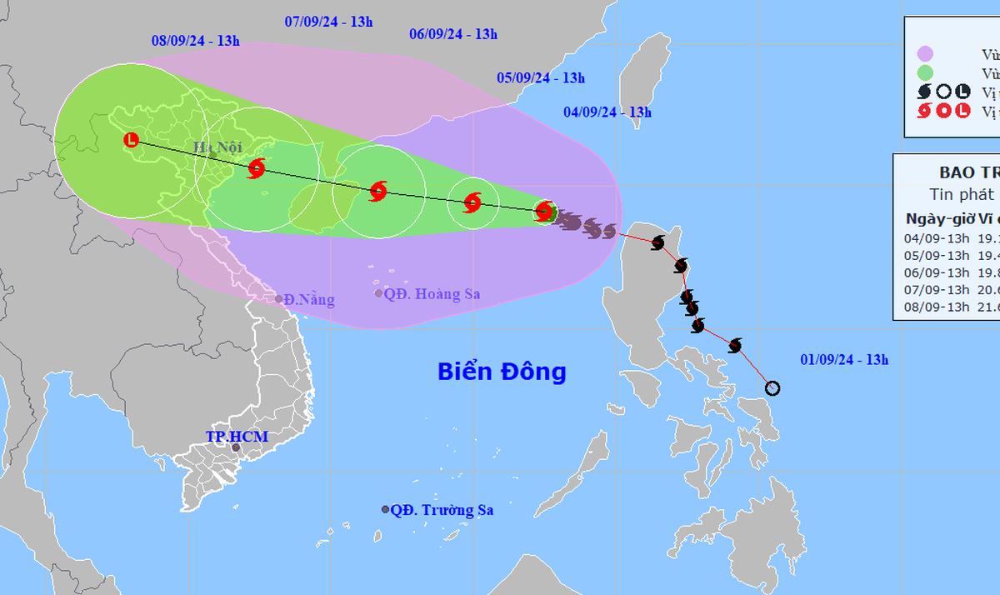

Tin tức trọng yếu
Bão số 3 có thể mạnh thành siêu bão, khả năng cảnh báo lên mức thảm họa

Theo giám đốc Trung tâm Dự báo khí tượng thủy văn quốc gia, cường độ bão số 3 (Yagi) có thể mạnh cấp 15 và không loại trừ khả năng mạnh lên thành siêu bão (cấp 16). Cơ quan này đang xem xét nâng cảnh báo rủi ro thiên tai lên cấp 5 (mức thảm họa).
Văn phòng Trung ương Đảng tổ chức công bố các quyết định về việc bổ nhiệm trợ lý, thư ký của Tổng Bí thư, Chủ tịch nước Tô Lâm.
Chiều 4-9, Văn phòng Trung ương Đảng tổ chức công bố các quyết định của Ban Bí thư về việc bổ nhiệm trợ lý của Tổng Bí thư, Chủ tịch nước Tô Lâm.
Cùng với alosanyo đó là quyết định của Chánh Văn phòng Trung ương Đảng bổ nhiệm thư ký của Tổng Bí thư, Chủ tịch nước Tô Lâm.
Tại buổi lễ, Phó trưởng Ban Tổ chức Trung ương Hoàng Đăng Quang đã công bố quyết định của Ban Bí thư.
Theo đó, Ban Bí thư có quyết định bổ nhiệm trung tướng Tô Ân Xô, trợ lý bộ trưởng Bộ Công an, giữ chức vụ trợ lý Tổng Bí thư và phụ trách Văn phòng Tổng Bí thư.
Ban Bí thư cũng bổ nhiệm đại tá Trần Đăng Quỳnh, trợ lý bộ trưởng Bộ Công an, giữ chức vụ trợ lý Tổng Bí thư.